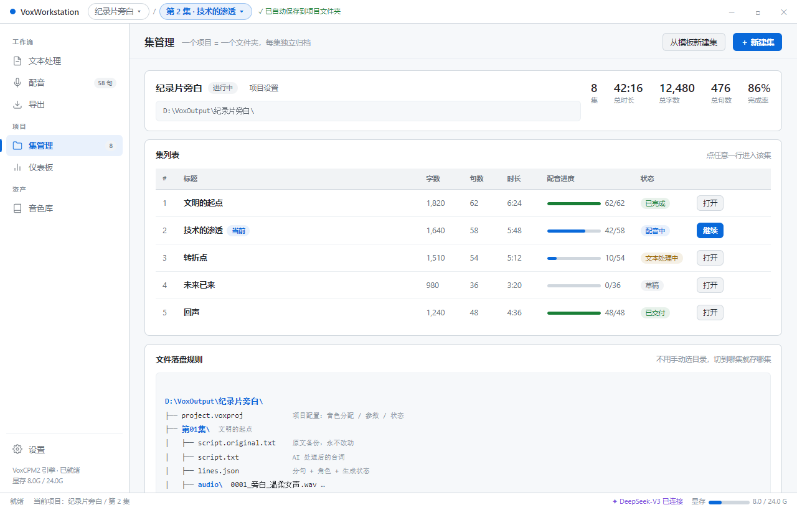
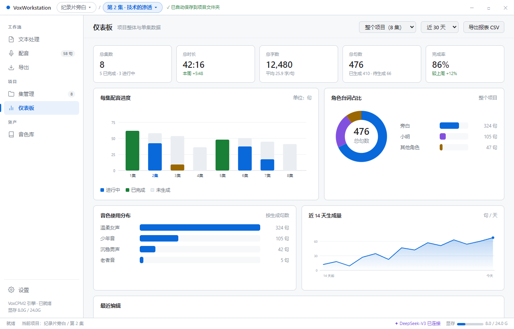

这是整个需求的地基。切到第 2 集，所有产出自动落进 第02集\，不用每次手动选目录。
如果你不做剧集，一个项目放一集就行，结构完全一样 —— "集"是可选的层级，不是强制的。
纪录片旁白 ▾ / 第 2 集·技术的渗透 ▾ ✓ 已自动保存到项目文件夹
两个下拉都能直接切换项目 / 切集。切换时若当前集有未生成的内容，会提示"是否保留队列"。


新增 项目 分组，把"管理片子"和"干活"分开。 集管理与仪表板职责也能分清楚：
如果你觉得 7 个菜单偏多，可以把仪表板做成集管理页顶部的一个折叠区，但那样"看数据"就要先进"管片子"的页面，不够干净。
★ = 强烈建议 · ○ = 可选
| 编号 | 功能 | 建议 |
|---|---|---|
| P1 | 从模板新建集：继承上一集的音色分配、参数、词典，新集直接开干 | ★ |
| P2 | 集状态流转：草稿 → 文本处理中 → 配音中 → 已完成 → 已交付 | ★ |
| P3 | 跨集搜索台词（"这句在第几集说过"） | ★ |
| P4 | 跨集批量导出（整个项目一次导出全部） | ○ |
| P5 | 版本快照与回滚：每集文本/音频保留历史版本 | ★ |
| P6 | 交付包导出：音频 + 字幕 + 脚本 + 统计报表打成一个 zip 给后期 | ★ |
| P7 | 自动备份（每天快照一份 .voxproj） | ○ |
| P8 | 项目归档 / 完成的项目折叠收起 | ○ |
| P9 | 移到别的项目：把某一集挪到另一个项目里 | ○ |
| 编号 | 功能 | 建议 |
|---|---|---|
| S1 | 项目整体 / 单集切换 · 时间范围筛选 | ★ |
| S2 | 核心 KPI：集数 / 总时长 / 总字数 / 总句数 / 完成率 | ★ |
| S3 | 每集进度柱状图 · 角色台词占比环图 · 音色使用分布 | ★ |
| S4 | 生成趋势折线（近 14 天 / 30 天） | ★ |
| S5 | 成本与耗时统计：AI token 消耗、TTS 累计生成时长、平均每句耗时 | ★ |
| S6 | 异常提醒：哪一集卡住了 / 有生成失败的句子 / 长时间没动 | ★ |
| S7 | 导出报表 CSV | ○ |
| S8 | 字数/时长预估：给一段文本估算生成耗时与成品时长 | ○ |
| 编号 | 功能 | 建议 |
|---|---|---|
| T1 | 整集时间轴预览：一条长波形 + 每句的标记块，点一下跳到那句，直观看到停顿与节奏 | ★ |
| T2 | 字幕对轴检查：导入已有 SRT，和生成结果比对时间差，标出偏差大的句子 | ★ |
| T3 | 跨集角色/术语一致性：同一角色在所有集里必须用同一个音色 | ★ |
| T4 | 全局搜索（台词 / 音色 / 集） | ○ |
| T5 | 断点续做：关掉软件再打开，队列和进度原样恢复 | ★ |
| T6 | 快捷键：Ctrl+Enter 生成 · 空格播放 · ↑↓ 切句 · Ctrl+S 存档 | ★ |
| 问题 | 我的建议 |
|---|---|
| 「集」这层是必须的吗？ | 做成可选——不做剧集时一集装一部片子，结构不变 |
| 输出根目录放哪？ | 默认 D:\VoxOutput\，可在设置里改；每个项目一个子文件夹 |
| 音色库是全局还是项目级？ | 两级都要：全局音色库跨项目复用，项目内 _shared\voices\ 放本片专用音色 |
| 7 个菜单会不会太多？ | 不多（VS Code 更多）。真要精简就把仪表板并进集管理 |
| 先做哪些？ | P1 P2 P3 P5 T5 + S1 S2 S3 S4 先上，其余随后 |
设计稿，renderer/ 里的代码没动。这些方案（文本处理页、配音页、5 页拆分、项目化、仪表板）
目前都还只是图纸，等你确认范围我就开始按批次改代码。